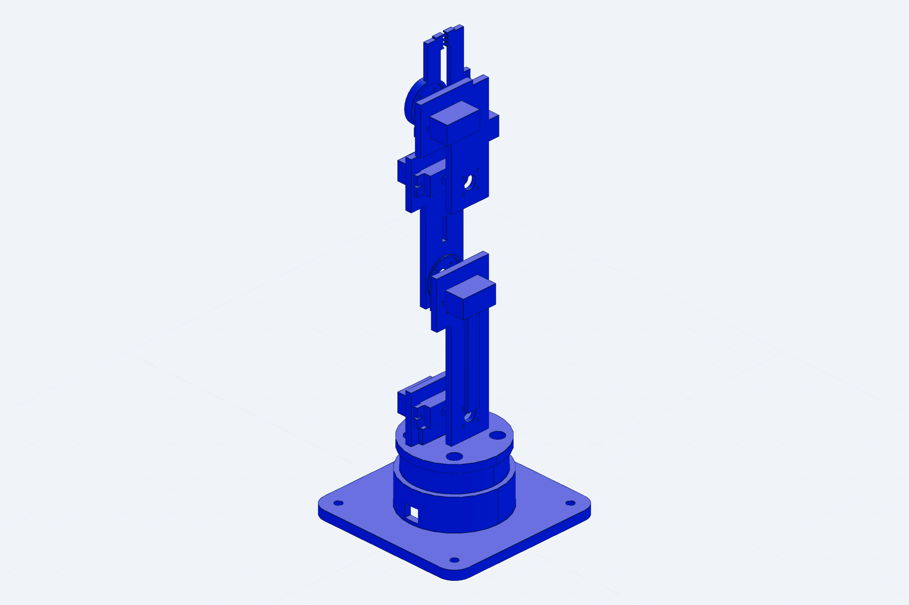
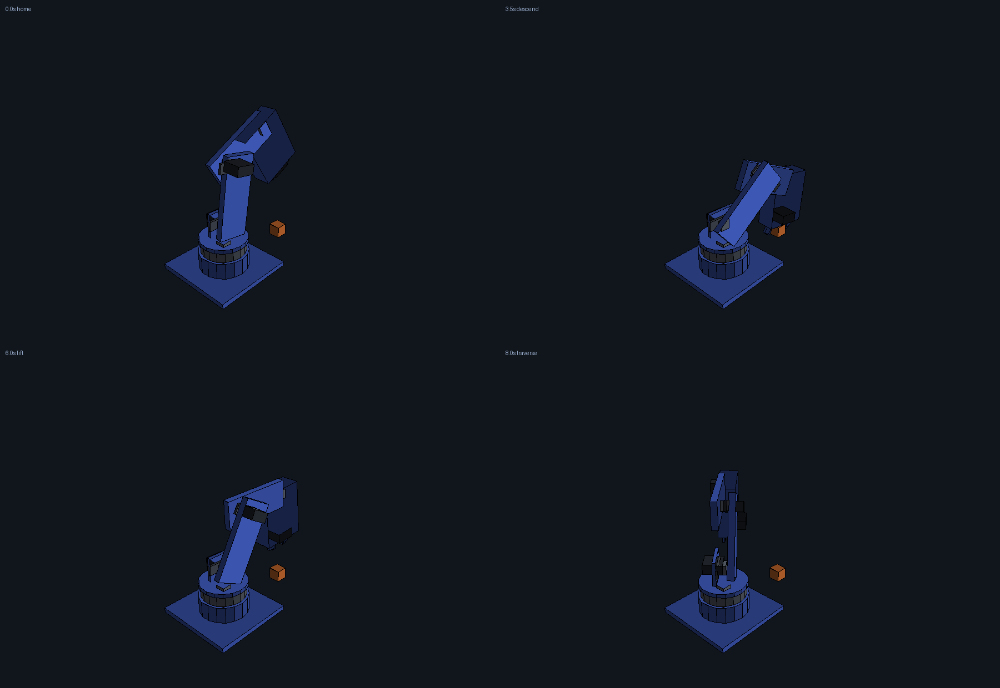
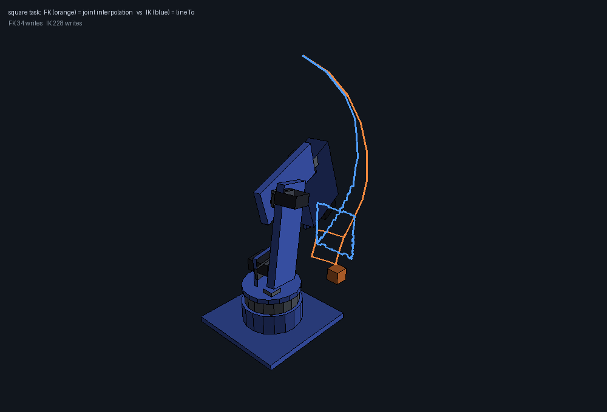
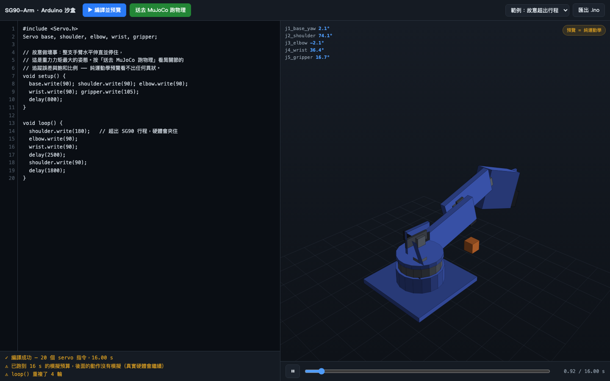
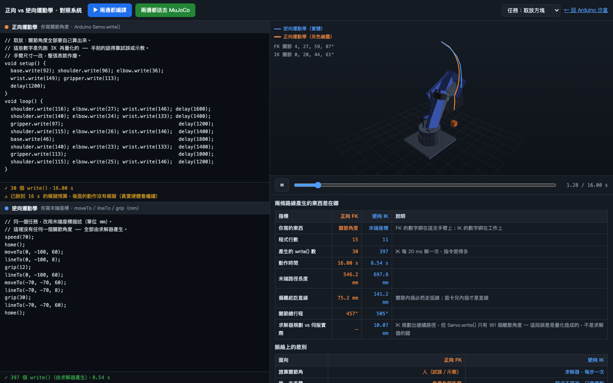
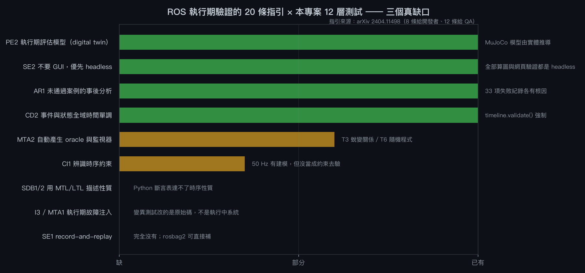
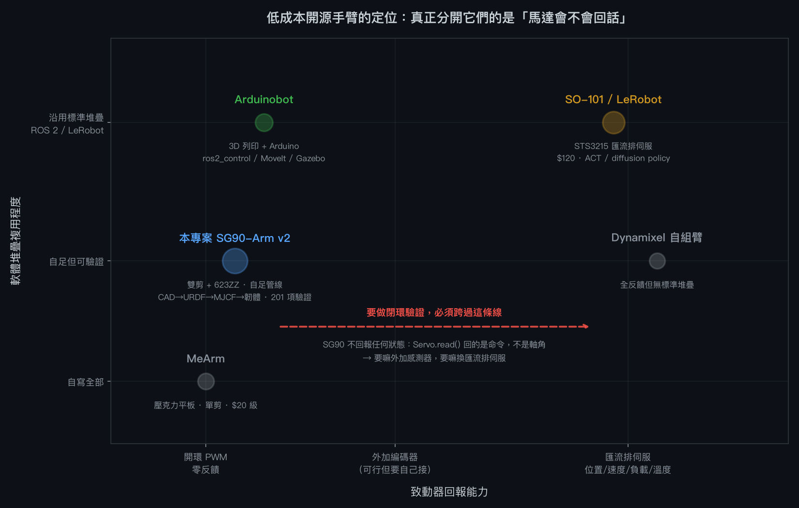
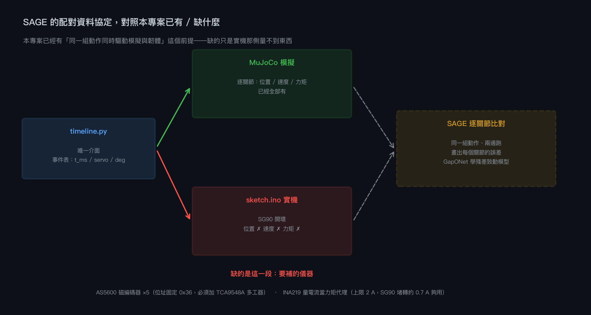

SG90-Arm →
5 軸微型伺服 · 202 mm · 酬載 4 g
9 個章節
NEMA17-Arm →
42 型步進 · 遠端 GT2 3:1 · 255 mm
1 個章節
FT5425BL-Arm →
標準舵機 · 直接驅動 · 190 mm · 酬載 100 g
1 個章節
專案目標與結論
在這台機器上重建 text-to-CAD 流程，畫出一組搭載 SG90 伺服馬達的精細機械手臂， 並建立「馬達程式 ↔ 物理模擬」的對應環境。本頁完整記錄過程，包含所有失敗。
核心結論
- 手臂可行。 可達範圍內最壞姿態用掉 SG90 堵轉扭矩的 44.7%，整個肩／肘工作空間 100% 可保持， 中位姿態還有約 36 g 的酬載餘裕。
- 模擬環境選 MuJoCo。 它的
position致動器本身就是伺服模型 （kp= 比例帶、forcerange= 堵轉扭矩上限），不需要外掛就能重現「馬達出不了力就跟不上」 這個真實失效模式。PyBullet 作為第二引擎交叉驗證，結論一致。 - 關鍵是訊號鏈而不是關節角。 直接餵
target_radians的模擬會顯示真實手臂做不到的動作。 把 ArduinoServo.write()的整數map()、50 Hz 取樣、脈寬轉角、迴轉率上限、死區 全部建模之後，模擬和韌體才是同一件事——本專案的sketch.ino與模擬跑的是同一組數字， 由同一個位姿表產生。 - 「產得出 STEP」不等於「裝得起來」。 8 個零件第一次全部通過 build123d 的合法性檢查， 但特徵稽核抓出 4 個真 bug、干涉檢查再抓出 2 個。詳見失敗紀錄。

進度時間軸
| 階段 | 做了什麼 | 結果 |
|---|---|---|
| 環境 | 建 Python 3.12 venv，裝 build123d 0.11.1 + cadpy 0.3.9 + MuJoCo 3.11 + PyBullet | 本機原本只有系統 Python 3.9 且無 build123d。已通 pybullet 需自行修補原始碼才編得過 |
| SG90 幾何 | 從 step.parts 下載 sg90_micro_servo，用 OCC 圓柱軸線抽取真實特徵位置 |
鎖孔 Ø2.0 @ 間距 27.2mm、輸出軸偏本體中心 +5.35mm、軸面高於耳片 4.3mm |
| CAD 建模 | build123d algebra mode 寫 8 個參數化零件 + 特徵稽核 + 干涉檢查 | 2 輪修正後 PARTS_VERIFIED + CLASH_CHECK_CLEAN |
| URDF | 由實測質量慣性產生 URDF，經 urdf skill 驗證器檢查 | 通過；夾爪閉鏈以 mimic 關節表達 |
| 模擬調查 | 調查 MuJoCo / PyBullet / Gazebo / Webots / Wokwi 的伺服建模方式 | 見調查表 |
| 伺服模型 | 實作 PWM → 角度的完整訊號鏈 | Arduino 語意 1:1 對應 |
| 模擬 | MuJoCo 主場景 + PyBullet 交叉驗證 + 扭矩包絡掃描 | 取放任務兩引擎皆 GRASP_SUCCEEDED |
| 韌體 | 由同一位姿表產生 sketch.ino | 10 個位姿 × 5 顆伺服 |
模擬環境調查
問題是：怎麼讓「馬達程式」和「模擬」是同一件事。調查分兩條路線—— 物理引擎（模擬機構）與韌體模擬器（模擬 MCU）。
物理引擎
| 工具 | 伺服建模方式 | 優點 | 本專案的取捨 |
|---|---|---|---|
| MuJoCo | <position> 致動器＝內建位置伺服：kp 比例帶、kv 阻尼、
forcerange 夾住輸出力矩 |
堵轉扭矩是一級公民；時間步 3 ms 仍有效；pip 直接裝；本機可離屏算圖 | 採用為主環境 forcerange 直接對應 SG90 的 1.8 kgf·cm，
不需要外掛就能重現「出不了力就跟不上」 |
| PyBullet | setJointMotorControl2(POSITION_CONTROL) 搭 force 與 maxVelocity |
Python 友善、直接吃 URDF、上手快 | 採用為交叉驗證 但 <mimic> 不生效、預設速度馬達會煞住每個關節，
兩者都要手動處理 |
| Gazebo (+ ros2_control) | JointPositionController 硬體介面 |
ROS 2 全鏈路、導航／SLAM 生態完整 | 本專案不需要 ROS，安裝成本遠高於收益 |
| Webots | 內建 Servo/RotationalMotor 節點含 maxTorque |
GUI 完整、教學場合友善、資產庫大 | 時間步僅在 48 ms 內有效，遠粗於 MuJoCo；本專案要看伺服暫態 |
韌體模擬器
| 工具 | 能做什麼 | 本專案的判斷 |
|---|---|---|
| Wokwi | 瀏覽器／CLI 模擬 Arduino、ESP32、STM32；支援 Servo.h；
wokwi-cli + YAML scenario 可做 CI；Custom Chips API（C/Rust→WASM）可自寫元件 |
真的能跑編譯後的韌體，是驗證程式邏輯與時序的好工具。 但它沒有物理引擎——伺服在裡面只是一個角度指示器，不會有負載、扭矩或掉件。 查證結果：官方文件沒有對外的 co-simulation 橋接 API |
| SimulIDE / Proteus | 電路級模擬含 MCU | 同上，電氣面強、機構面沒有 |
結論：兩邊都不完整，缺口在中間
物理引擎不知道 Servo.write(90) 是什麼意思；韌體模擬器不知道手臂有多重。
本專案補的就是中間那一層——一個把 Arduino 語意翻譯成關節設定點的伺服模型，
讓兩邊接得起來。這也是為什麼 sketch.ino 是產生的而不是手寫的：
韌體和模擬跑的是同一組數字。
入口與遠端存取
一個可點擊的入口頁彙整三個系統，並可從 Tailscale 內的任何裝置操作。
| 入口頁 | http://localhost:8791/ — 三張卡片連往沙盒、對照系統、本記錄頁，
附後端健康狀態與可複製的連線網址 |
|---|---|
| 這台電腦 | http://localhost:8791/ |
| Tailscale 其他裝置 | http://<本機 tailnet 位址>:8791/ |
| 路由 | / 入口 · /play 沙盒 · /compare 對照 ·
/report 本頁 · /health 後端狀態 · /run MuJoCo 端點 |
| 服務登錄 | 已註冊為本機的 launchd 服務， 由本機的服務入口開關 |
綁定範圍是刻意選的：不是 0.0.0.0
伺服器開兩個 socket，分別綁 127.0.0.1 與 <本機 tailnet 位址>，
不綁 0.0.0.0。差別是實質的：0.0.0.0 會連帶把服務
暴露給筆電當下所在的咖啡廳或校園 Wi-Fi，而綁 tailnet 位址只會讓已通過 Tailscale 認證的裝置連得到。
--no-tailscale 可退回只監聽本機。
遠端存取預設不要密碼。 邊界由 Tailscale 本身把關——只有登入這個 tailnet 的裝置
連得到這個位址，沒登入的連 TCP 都握不到手，在個人 tailnet 上再加一道密碼只是增加摩擦。
啟動時加 --auth 可以要求 Basic Auth。
這個開關刻意做成本服務自己的參數，而不是「憑證檔存不存在」：
那個檔案是本機服務入口在用的，若為了開放這個埠而把它刪掉，
會連帶把服務入口的密碼一起關掉——一個沒人要求的副作用。
實測：本服務遠端 200 免帳密、服務入口仍為 401、--auth 啟動時遠端無帳密 401 / 有帳密 200。
/run 不執行收到的任何東西——時間軸是一串數字，進 MuJoCo 前由
timeline.py 驗證過型別、範圍與伺服名稱。
#22 從 launchd 服務啟動時 Tailscale 綁定靜默失敗 已修
手動在終端機啟動一切正常；改由 launchd 服務啟動後，只綁上 loopback， 啟動訊息寫「Tailscale 未啟動或已停用」。
根因：launchd 給子行程的 PATH 是
/usr/bin:/bin:/usr/sbin:/sbin，而 tailscale 裝在
/usr/local/bin。互動 shell 找得到，launchd 生的行程找不到，
偵測函式就回傳 None 並靜默退回本機模式。
修法：先試幾個絕對路徑（/usr/local/bin、
/opt/homebrew/bin、Tailscale.app 內），再退回解析 /sbin/ifconfig
（/sbin 一定在 launchd 的 PATH 上），完全不依賴 Tailscale CLI。
順帶把位址判斷從「開頭是 100.」收緊成真正的 CGNAT 範圍
100.64.0.0/10——100.7.x.x 是一般公網位址，不該被誤認。
教訓：在互動 shell 測過不代表在 launchd/cron 下會過，兩者的環境不同。 這個 bug 只有實際「用 launchd 服務啟動一次」才會現形。
Arduino 沙盒（側邊面板）
在瀏覽器裡寫 Arduino 程式控制這支手臂：邊打字邊看運動學預覽， 按一個鍵送去本機 MuJoCo 跑真實物理。
cd ~/3d/servo-arm/sim && ../.venv/bin/python serve_playground.py
# → http://localhost:8791/
架構：時間軸是唯一的介面
伺服器不看 C++，只吃時間軸。這讓程式的「意義」只存在一個地方：
瀏覽器預覽和 MuJoCo 若有出入，一定是伺服模型或物理的差別，
不可能是兩個直譯器各自漂移。同一條時間軸也是產生 .ino 的來源，
所以韌體與模擬由建構方式保證是同一支程式。
支援的 Arduino 子集
| 支援 | setup()/loop()、servo.write()、
writeMicroseconds()、attach()、delay()、
int 變數、for/while/if、
map()/constrain()/min()/max()/millis() |
|---|---|
| 不支援 | 自訂函式、浮點、字串、Serial、陣列（servos[] 除外） |
| 伺服命名 | base/shoulder/elbow/wrist/gripper、j1..j5、
servos[0..4]，或自己 Servo a,b,c,d,e; 依宣告順序對應 |
碰到不支援的語法會回報行號並拒絕編譯，不會安靜略過。 四個內建範例（取放、逐關節掃描、揮手迴圈、故意超出行程）都通過自動測試。
驗證方式
瀏覽器預覽工具在這次工作階段中無法使用，所以改用兩條可重複的離線檢查：
node test_playground.js— 四個範例都要編譯成功；壞語法要帶行號被擋下；write()的整數map()要逐值等於 Servo.hpython test_servo_parity.py— 把 JS 算出的伺服軌跡與 Python 端逐點比對。 結果 0.00000° 逐位元一致
3D 繪製則是把 JS 算出的投影多邊形匯出，用 PIL 光柵化成上面那張圖來檢查。
正向 vs 逆向運動學對照系統
同一支手臂、同一組物理、同一個任務，兩種思考方式並排：
左邊寫關節角度，右邊寫末端座標。http://localhost:8791/compare

脈絡上的差別
| 面向 | 正向 FK | 逆向 IK |
|---|---|---|
| 你寫什麼 | shoulder.write(140) | lineTo(0, -100, 8) |
| 思考單位 | 關節角度（度） | 工作空間座標（mm） |
| 誰算關節角 | 人：試誤或示教 | 求解器，每 20 ms 一次 |
| 換一支手臂 | 角度全部作廢 | 程式不用改，只換模型 |
| 可達性 | 恆可執行（角度就是角度） | 可能無解 → 當場報錯 |
| 走直線 | 做不到 | lineTo 就是 |
| MCU 算力 | 零 | 每步一次阻尼最小平方疊代 |
| 失效模式 | 姿態錯了才看得出來 | 解不出來時立刻失敗 |
量測到的差別
| 任務 | 路線 | 程式產生的 write() | 動作時間 | MuJoCo RMS 誤差（最大關節） |
|---|---|---|---|---|
| 取放方塊 | FK | 30 | 16.0 s | 3.06° |
| IK | 397 | 8.5 s | 3.44° | |
| 末端走直線 | FK | 26 | 16.0 s | 3.90° |
| IK | 288 | 5.8 s | 3.61° | |
| 畫方框 | FK | 34 | 16.0 s | 3.61° |
| IK | 228 | 5.4 s | 3.74° |
三個從對照裡才看得出來的結論
- IK 多送 10 倍指令，並沒有換來更差的追蹤。 兩條路線的 RMS 誤差都落在 3.0–3.9°， 差異在雜訊範圍內。瓶頸是 SG90 本身的迴轉率與扭矩，不是指令密度—— 這推翻了「指令太密會塞爆伺服」的直覺。
- 直線只有 IK 做得到，而且是徹底的。 純
lineTo段的末端偏離量測為 0.003 mm；同一段路用關節內插則偏離 69.8 mm。 這不是調參數能縮小的差距，是兩種內插的本質差異。 - IK 的精度會被
Servo.write()的量化吃掉。 求解器把末端解到 0.1 mm 以內，但write()只有 181 個整數角度（間距約 1.03°）， 規劃路徑與伺服實際到達的路徑之間因此有一段固定誤差。 對照頁把這一項單獨列出來，因為它和求解器品質無關—— 要更準得改用writeMicroseconds()或換有更高解析度的伺服。
逆向路線的驗證
瀏覽器的 IK 對著手寫的正向運動學鏈求解，MuJoCo 對著自己編譯的模型求解。 兩套獨立的運動學描述，正是本專案失敗 #10 的翻版風險， 所以做了交叉檢查：把 JS 解出的關節角餵進 MuJoCo，看夾持點實際落在哪裡。
$ python test_ik_parity.py
target (mm) JS residual MuJoCo TCP error
(0, -100, 8) 0.139 mm 0.139 mm
(0, -100, 60) 0.031 mm 0.031 mm
(-70, -70, 8) 0.068 mm 0.068 mm
(60, -80, 40) 0.028 mm 0.028 mm
(0, -140, 20) 0.078 mm 0.078 mm
(0, -60, 120) 0.049 mm 0.049 mm
worst MuJoCo-side error 0.139 mm (tolerance 1.0 mm)
JS_IK_MATCHES_MUJOCO刻意不比較兩個求解器的關節角——手臂到同一點的姿態不唯一，比角度沒有意義。 唯一該問的是：瀏覽器產生的姿態，有沒有把手指放到程式要求的位置。
驗證方法論與測試系統
先查這類專案業界怎麼做驗證，再照著設計一套十二層測試系統，然後用它反覆修正現有系統。 結果：125 項檢查全過，過程中在既有系統裡挖出 5 個真問題。
先釐清一組被我混用的詞
ASME VVUQ 把兩個問題分得很開，而我先前一直混著談：
| Verification 驗證 | 方程式有沒有被正確地解出來？ 分成 code verification（程式對不對）與 solution verification（這次的數值誤差多大）。 |
|---|---|
| Validation 確效 | 解的是不是正確的方程式？ 必須拿模擬結果去對實體量測。 |
誠實標記：本專案沒有 validation
零件從來沒有印出來組裝過，沒有任何實體量測。依 ASME 的定義， 下面 125 項檢查全部屬於 verification，沒有一項是 validation。 測試報告的第一行就印這句話，避免一排綠燈被誤讀成「這支手臂在真實世界會動」。
要補上 validation，最小可行的一步是：印出零件、裝上 5 顆 SG90， 量三件事——靜態保持時的下垂角、一次階躍指令的到位時間、以及夾持 15 mm 方塊的最大可提質量， 拿去對模擬的對應輸出。
十二層測試，以及每一層為什麼存在
| 層 | 技術 | 解決什麼問題 | 項數 |
|---|---|---|---|
| T0 | 幾何完整性 | 單一實體、特徵普查、STL watertight/manifold、慣性張量物理可能性 （正定 + 主慣性三角不等式） | 58 |
| T1 | 解析解對照 | 本專案唯一接近真 oracle 的東西：q=0 的重力力矩手算、 自由落體的觀測收斂階數、複擺小角度週期 | 7 |
| T2 | 不變量 | 每次執行都必須成立且不需要 oracle：無 NaN、不超關節極限、 力矩不超堵轉、夾爪耦合約束、無驅動時能量守恆、模型常數彼此一致 | 27 |
| T3 | 蛻變測試 | 沒有 oracle 時的核心手段。不問「這個輸出對不對」， 而問「這兩次執行的關係符不符合物理」。9 條關係式，違反即證明有錯， 不需要任何人知道正確答案 | 13 |
| T4 | 差異測試 | 獨立實作互相對照：JS↔Python 伺服模型、JS IK↔MuJoCo 運動學、 JS FK↔MuJoCo FK（200 組隨機姿態）、MuJoCo↔PyBullet | 8 |
| T5 | 解的驗證 | 時步減半看答案動不動。界定每個數字能報幾位 | 6 |
| T6 | 性質測試 | 60 支隨機程式 + 150 個隨機 IK 目標，只問「有沒有發生不可能的事」 | 5 |
| T7 | 黃金回歸 | 釘住已發表的數字，任何未說明的漂移都失敗 | 18 |
| T8 | 可組裝性 | 看渲染圖抓得到形狀，抓不到「裝不裝得起來」。旋入長度、 螺絲互相干涉、依裝配順序判定的起子路徑、由幾何推導的 BOM | 7 |
| T9 | Playwright 實跑瀏覽器 | 前面每一層量的都是幾何與物理，沒有一層量過網頁。 路由回 200 完全不代表畫面有畫出來。實跑 headless Chromium：JS 例外、console 錯誤、 畫布非背景像素比例、按鈕真的有反應、四個預設程式都能編譯 | 26 |
| T10 | 可列印性 | T0 說幾何成立、T8 說裝得起來，都沒問「做得出來嗎」。 床尺寸、貼床面積、最佳擺法下的懸空面積比、每個孔的壁厚 | 5 |
| T11 | 靜態發布版 | T9 是對著真的伺服器驗，證明不了靜態主機上還能不能動——
路由改寫、/health、/run 全都沒了。改用 http.server 純供檔
（等同 GitHub Pages），驗每張圖真的解碼、互動仍可用、
物理按鈕誠實失敗而不是假裝成功 | 21 |
T8/T9/T10 是「不要再靠看」這件事的直接結果：能組裝、能列印、頁面真的活著， 三者都不是肉眼能判定的，而前八層一項都沒覆蓋到。
T9：不用互動式瀏覽器，也能真的驗證網頁
整個建置過程中，互動式瀏覽器工具都無法使用。我一直回頭去試同一條路，這是這輪最大的浪費。 真正的問題是我把「開瀏覽器看一眼」當成唯一手段， 而把頁面驗證寫成程式碼從一開始就更好——它可重複、能進測試套件、 而且會在肉眼會滑過去的 console 錯誤上直接失敗。
Playwright 早就裝在這個 venv 裡（CAD 的算圖就是靠它），可以在行程內直接開 headless Chromium：
| 量什麼 | 為什麼肉眼不可靠 |
|---|---|
| HTTP 狀態 + 真的到 load | 路由錯了整頁不存在，但 curl 只看得到狀態碼 |
| JS 例外 / console 錯誤 | 頁面看起來完全正常而功能已死，這是唯一線索 |
| 畫布非背景像素比例 | 畫布存在但全白是最典型的無聲失敗；DOM 檢查抓不到 |
| 按鈕真的有反應 | 事件沒接上時，靜態截圖與正常狀態一模一樣 |
| 四個預設程式都能編譯 | 預設程式是使用者的第一個入口 |
/run 從頁面的呼叫路徑 | 真物理後端是這個沙盒與純動畫的差別 |
| 非法 timeline 會被拒絕 | 沙盒收外部輸入，靜靜當成別的東西跑掉比報錯危險 |
結果：26 項全過。四個頁面都沒有 JS 例外、沒有 console 錯誤，
畫布非背景像素 93.9%，四個預設程式都編譯成功。
順手抓到的是我自己測試 payload 寫錯（servo: 1 不是合法名稱），
而 /run 用具名錯誤正確拒絕了它——反而證明驗證層有在作用，已加成一項正式檢查。

/play、按下「編譯並預覽」之後的實際畫面。
狀態列同時顯示編譯成功與兩項警告（模擬預算截斷、loop() 重複輪數），
這些警告本身也是 T9 斷言的對象。
截圖由測試自己產出到 renders/page_*.png，
所以每次跑套件都留下可人工複核的證據，而不是只有一個綠燈。
T3 的九條蛻變關係
這一層值得單獨說，因為它是整套系統裡最有力的部分。沒有人能說出「這支程式跑到 4.2 秒時手臂應該在哪」， 但下面每一條都是真實機器必然滿足的性質：
| 關係 | 敘述 | 違反代表 |
|---|---|---|
| MR1 決定性 | 同輸入 → 逐位元相同 | 有未初始化狀態，所有回歸測試失效 |
| MR2 時間平移 | 整體延後 Δt → 軌跡只是平移 | 有絕對時間依賴 |
| MR3 鏡射 | 偏航取反 → 轉回轉盤座標系後末端一致 | 座標鏈或伺服映射不對稱 |
| MR4 無重力 | 重力關掉 → 任何靜態姿態都不需保持力矩 | 重力被寫死或方向錯 |
| MR5 單調性 | 酬載變重 → 肩關節力矩單調變大 | 質量沒接進運動鏈 |
| MR6 串接 | 分段時間軸 ≡ 整段 | 時間軸不是程式的唯一意義 |
| MR7 冪等 | 重複寫同角度不產生額外動作 | 伺服死區沒有真的實作 |
| MR8 放慢 | 整體放慢一倍 → 追蹤誤差不變大 | 伺服模型或積分器有病態行為 |
| MR9 尺度不變 | 幾何×k、質量×k³ → 靜態力矩×k⁴ | 質量或幾何有一邊沒被一致縮放 |
測試系統挖出的 5 個真問題
#23 每次模擬的前 0.5 秒都是假暫態 靜默 已修
MR2（時間平移）失敗，差 57°。追下去發現不是測試的問題，是生產程式碼的 bug。
run_mujoco.run() 的註解寫「start settled at the home pose so the first frame is not a
drop test」，但實作沒做到：setup() 只設了 commanded_us，此時
latched_us 仍是 1500 µs，所以 joint_setpoint() 回傳的是伺服中心姿態
而不是程式的起始姿態。每次模擬都從中心姿態滑移到起始姿態。
影響已發表的數字：修正後 j3 峰值追蹤誤差 14.35°→8.47°、 j4 12.96°→8.70°、j5 10.27°→8.68°。 那三個關節先前的峰值有四成是開機暫態而非程式造成。j1/j2 與任務結果不變。
修法：新增 SG90.settle()，在初始化 qpos 前把伺服直接跳到指令位置。
#24 關節極限太軟，隨機程式能陷進去 6.8° 已改善
T6 的隨機程式把關節推過極限 6.79°。MuJoCo 的關節極限是軟約束，
預設 solref 時間常數 0.02 s 對 1 ms 時步而言太鬆。
修法：收緊到 solreflimit="0.002 1" → 降到 1.20°。
再收緊或增加求解器迭代都不再改善——那是這個約束模型的下限。
1.2° 對塑膠齒輪伺服撞上機械停點是合理的順應量，所以界線訂在 2°，
並另外驗證它是有界的（極端程式下不會發散）而非約束在失效。
#25 堵轉扭矩被定義兩次，改一個不影響物理 靜默 已修
由變異測試發現。堵轉值同時存在於
sim/sg90_servo.py（報告用）與 urdf/sg90_arm.py（真正進 MJCF
forcerange）。把前者改小 10% 完全不影響模擬結果，而且沒有任何檢查會察覺。
修法：T2 新增三向一致性檢查——兩個常數彼此相等，
且都等於編譯後模型實際的 forcerange（那才是唯一真正限制出力的地方）。
#26 沒有東西驗證關節行程等於 SG90 的 180° 靜默 已修
同樣由變異測試發現。把行程放寬 20% 後：T2 的「未超出關節極限」因為極限也跟著放寬而 空洞地通過，而取放程式根本碰不到極限，所以完全沒有測試察覺。
修法：新增「每個關節的行程寬度 = SG90 的 180°」與「行程中心 = 舵盤索引角」， 兩者都從 datasheet 常數獨立推導，不依賴模型自己的值。
#27 模型常數被截斷成 6 位有效數字 已修
加上一致性檢查後才浮現：關節行程寫出來是 180.0004° 而不是 180°，
forcerange 是 0.1765 而不是 0.1765197。MJCF/URDF 產生器用 %.6g／%.4g
格式化，把模型常數截斷了。
修法：關節極限、ctrlrange、forcerange、kp 全部改成 %.12g。
數值影響很小，但它會讓任何嚴格的一致性檢查無法收斂——而那類檢查正是抓出 #25/#26 的工具。
T5 界定了每個數字能報幾位
時步收斂研究得到一個具體且重要的結論：
| 量 | dt 1→0.5 ms 的變化 | 可信度 |
|---|---|---|
| 關節終態角度 | < 1.5° | 可信 |
| 末端位置 | < 2 mm | 可信 |
| 非接觸關節峰值力矩（j1–j4） | < 0.006 N·m | 可信 |
| 接觸關節峰值力矩（j5 夾爪） | 0.023 N·m（13% 堵轉） | 未收斂：0.0617(2ms) → 0.1099(1ms) → 0.1301(0.5ms) → 0.1325(0.25ms) |
| 99 百分位力矩（全部關節） | < 0.006 N·m | 可信 |
結論：接觸衝量的峰值本來就對時步敏感，把 j5 的峰值力矩報到 4 位數是假精度。
因此 run_mujoco.py 現在同時輸出 99 百分位力矩——它在所有關節上都對時步不敏感，
是可以照著報的數字。
注意：扭矩包絡分析的堵轉佔比是靜態計算
（qfrc_bias），與時步無關，不受這一項影響。
變異測試：這套測試真的有效嗎？
一個永遠通過的測試套件證明不了任何事。所以故意注入 6 個缺陷， 檢查套件抓不抓得到。第一輪只抓到 4 個——存活的兩個就是真盲點。
| 注入的缺陷 | 第一輪 | 補洞後 | 誰抓到的 |
|---|---|---|---|
| 伺服堵轉扭矩改小 10% | 存活 | 抓到 | T2 常數一致性（新增） |
| 肘關節伺服符號翻轉 | 抓到 | 抓到 | T7 黃金回歸（18 項中 12 項失敗） |
| 前臂質量改大 20% | 抓到 | 抓到 | T7 峰值力矩 0.1454 vs 0.1339 |
| 重力值 9.81 → 9.8 | 抓到 | 抓到 | T1 觀測收斂階數 0.823（應為 1.0） |
| 關節行程放寬 20% | 存活 | 抓到 | T2 行程一致性（新增） |
| 舵盤索引角改掉 | 抓到 | 抓到 | T7 黃金回歸 |
補洞後 6/6 全部抓到。 兩個存活的變異之所以有價值，是因為它們指出的不是 「測試寫得不夠多」，而是系統本身的結構問題：常數被定義兩次、 以及某個參數根本沒有任何獨立來源可以對照。
cd ~/3d/servo-arm/tests
../.venv/bin/python run_all.py # 125 項檢查
../.venv/bin/python run_all.py --tier T3 # 只跑某幾層
../.venv/bin/python run_all.py --rebaseline # 明確重訂黃金基準
../.venv/bin/python mutation_check.py # 驗證套件本身有效失敗紀錄
前 22 項。#23–#33 由驗證系統挖出，記在上一節；#34 是替第二支手臂做扭矩預算時挖出的，記在扭矩包絡那節；#35–#43 是做 NEMA 17 步進模擬與韌體時挖出的，記在 NEMA 17 手臂那節；#44–#47 是查證致動器資料時挖出的，記在 致動器資料查證那節；#48–#52 是第三支手臂上挖出的（#48 還是回頭關於第一支手臂的），記在 FT5425BL 手臂那節——其中四個是連續的錯模型，每個都「會跑、會印出合理的數字」。標 靜默 的是不會報錯的錯誤—— 工具鏈照樣產出看起來完全正常的結果，只有量測才抓得到。這類佔了一半以上。
#1 pybullet 編譯失敗，還連累 mujoco 沒裝到 已修
pip install mujoco pybullet numpy 整筆失敗。pybullet 內附的舊版 zlib 在
zutil.h 第 128 行有：
#if defined(MACOS) || defined(TARGET_OS_MAC)
#ifndef fdopen
#define fdopen(fd, mode) NULL /* No fdopen() */現代 macOS SDK 會定義 TARGET_OS_MAC，於是這個巨集把 SDK <stdio.h> 裡
fdopen 的宣告污染成 NULL，clang 報 expected identifier or '('。
次生問題：pip 是單一交易，pybullet 建置失敗導致整筆回滾， 所以 mujoco 也沒裝上。錯誤訊息只提 pybullet，很容易誤以為 mujoco 裝好了。
修法：下載 sdist、註解掉那一行、重新建置。分開安裝 mujoco。
#2 手臂板比 SG90 鎖孔間距還窄 靜默 已修
板寬 26 mm，但鎖孔間距 27.2 mm。特徵普查顯示 Ø1.7 孔只有 5 個而非 6 個—— 有一顆孔完全落在材料外，切除運算移除了零體積，build123d 不會有任何反應。
修法：在伺服端加寬凸緣至 Y ∈ [−23, +13]。
#3 J5 掛在不存在的面上 靜默 已修
腕座的板材在 X ∈ [6, 10]，但 J5 用 s=+1 時耳片座應在 X < −6.8。兩顆鎖孔全部空切。
這個錯誤逼出了整個專案最重要的結構規則：關節手性必須交替（見設計章節）。 一開始我以為只要調整某個數字，實際上是拓樸層級的約束。
#4 夾爪舵盤沉孔把整個樞紐轂吃掉 靜默 已修
在 3 mm 厚的夾爪上切 4 mm 深的 Ø21.4 沉孔 → 變成貫穿孔，連帶把 Ø14 樞紐轂和 4 顆舵盤螺孔一起移除。 普查結果：Ø1.7 = 0、Ø3.0 = 0、Ø3.2 = 0，全部消失。
修法：主動指的轂加厚到 5 mm，沉孔改為只開在舵盤側的盲孔。
#5 兩片夾爪的轂互相干涉 已修
主動指的轂 Ø25.4（要吞下 Ø21.4 沉孔）、惰指 Ø14，兩樞紐間距原設 18 mm < 12.7 + 7 = 19.7 mm。
修法：樞紐間距加大到 ±11 mm，並把這個約束寫成程式碼註解，避免以後改動時再犯。
#6 干涉檢查抓到兩處互穿 已修
零件全部通過特徵稽核之後，成對實體交集運算仍然找出：
- 夾爪墊片互穿 51.7 mm³（閉合姿態下兩指的夾持面重疊 3 mm）
- 惰爪曲柄撞到腕部橋接件 12.0 mm³（Z 方向重疊 1 mm）
兩者的體積都和手算吻合。渲染圖完全看不出來——這是為什麼要算交集體積而不是看圖。
#7 慣性張量算出負值 已修
7 個連桿裡有 6 個的 Ixx／Iyy 是負的，物理上不可能。
根因：我假設 OCC 的 GProp_GProps::MatrixOfInertia() 回傳的是對參考點（原點）
的張量，於是用平行軸定理往回減。實測（把 10 mm 立方體移到 x=100，對角線數值不變）證明它回傳的是
對質心的張量——平行軸項應該是加而不是減。
教訓：函式庫的參考點約定用猜的不行，寫三行測試就能確定。
#8 扭矩少了 10 倍 已修
URDF 的 effort 是 0.0176 而非 0.1765 N·m。單位換算寫成
1.8 * 0.0980665 / 10.0——但 0.0980665 這個常數已經包含了 cm→m 的換算，
多除了一次 10。
為什麼重要：這個錯會讓手臂在模擬裡直接垮掉，然後我就會錯誤地推論 「SG90 帶不動這支手臂，要換 MG90S」——一個完全由單位錯誤製造出來的假結論。
#9 MuJoCo 沒有自動排除父子碰撞 已修
基座偏航關節在模擬裡完全不動（指令 −56.6°、實際停在 4.6°）。我原本以為是扭矩不足。
實際查接觸點：底座與轉盤的碰撞箱互穿 10 mm，產生 4 個接觸點，摩擦力把關節鎖死。 兩夾爪之間也互穿 1 mm。
修法：用 contype/conaffinity 位元遮罩分三組——機器人 (1, 6)、地面 (2, 5)、工件 (4, 3)， 機器人各連桿之間不自我碰撞，但都能碰地面與工件。
#10 解析 IK 的符號錯誤——往返測試抓不到 靜默 已修
我寫的 fk 與 ik 互相驗證通過，往返誤差 0.000 mm。
但兩者同時與物理模型不符，兩個錯誤在函式對內部互相抵消：
- 繞 +X 正向旋轉是把連桿往 −Y 倒，不是 +Y——手臂伸向了基座的另一邊
- 夾持點不在末端連桿的中心線上：實際偏離手臂平面 7.5 mm、距腕關節 73 mm， 而我假設的是沿連桿 77 mm。我還誤用了碰撞箱中心（local z=13）而不是夾持墊（local z=31）， 造成 18 mm 的高度差
症狀：工件位移 0.0 mm，夾爪根本沒碰到它。
修法：改用 mj_jacSite 對 MuJoCo 自己的運動學做阻尼最小平方數值 IK。
這消除了整類錯誤——因為只剩一份運動學描述，而且就是物理引擎在用的那一份。
教訓：自洽性測試（round-trip）證明不了正確性。要對外部基準驗證。
#11 數值 IK 卡在初始姿態 已修
不論給什麼目標都收斂到同一組角度、殘差 241 mm。原因是 mj_jacSite 需要
data.subtree_com，而 mj_kinematics 不會填它。
修法：補一行 mj_comPos。修好後殘差降到 0.04–0.11 mm。
#12 夾爪用外接盒當碰撞體，工件在搬運途中掉落 已修
工件被舉起 39.7 mm 之後掉回地面。逐格追蹤顯示兩片夾爪確實都接觸到工件， 但接觸幾何完全不對：夾爪的碰撞體是包含樞紐轂在內的整體外接盒（Y 向 26 mm）， 模擬中真正接觸工件的是這個大方塊的邊角，而不是設計的夾持墊。工件在夾合時被推歪 1.7 mm， 一加速就被擠出去。
修法：每片夾爪改用兩個依實際幾何定義的碰撞盒（手指 + 夾持墊），夾持墊另給較高摩擦。 修正後：舉高 50.0 mm、搬運 73.9 mm，成功。
教訓：碰撞體的簡化不是免費的。對夾爪這種接觸就是功能的機構， 外接盒抽象會直接摧毀被模擬的行為。
#13 腕關節需要 +118°，但 SG90 只有 ±90° 真實限制 已修
IK 要求手指在折疊姿態下垂直向下時，腕關節需 +118°，超出行程 28°。
修法：SG90 舵盤壓在 21 齒花鍵上，組裝時可以每 ~17° 換一齒重新索引。
把 j4 的舵盤偏移整整兩齒（34.29°），可用窗口從 ±90° 移到 −55.7°…+124.3°。這是實機上的標準做法，
所以做成正式參數 HORN_INDEX_DEG，並讓 URDF/MJCF 的關節極限跟著它一起算，避免兩邊不同步。
#14 +Y 側完全不可達 真實限制
手臂零位朝上，所有俯仰關節正轉都往 −Y 倒。要伸到 +Y 需要肩關節超過 +90°，超出行程。 IK 在該側殘差 100 mm 且不收斂。
處理：這不是 bug 而是設計事實，把工件改放在 −Y 側，並在文件中明確記錄。 若要雙側作業，需要把肩伺服的舵盤重新索引（同 #13）。
#15 MuJoCo 離屏緩衝區預設只有 640×480 已修
要求 900×600 算圖時 mujoco.Renderer 拒絕配置，並直接把需要的 XML 片段印出來。
修法：在 MJCF 加 <visual><global offwidth="900" offheight="600"/></visual>。
（這是本清單裡少數會主動告訴你怎麼修的錯誤訊息。）
#16 step.parts 的 SG90 鎖孔間距與 datasheet 差 0.6 mm 未解
模型量到 27.2 mm，一般 datasheet 標 27.8 mm。本專案的座槽依模型實測值開孔， 所以 CAD 內部是自洽的；但如果要用實體 SG90 組裝，必須先量過手上那批的實際間距， 或把鎖孔改成長孔以吸收差異。
沒有解決——手邊沒有實體件可以量。這是已知風險而非已修正的問題。
#17 「模擬時間預算」被當成錯誤，三個正常範例全部編譯失敗 已修
沙盒的四個內建範例，有三個一編譯就報「模擬時間超過 60 s 上限」。
根因：我把兩件意義完全不同的事用同一個常數處理——
「要模擬多長」和「無窮迴圈防護」。Arduino 的 loop() 本來就會永遠重複，
跑到時間預算是「模擬夠了，乾淨截斷」，不是錯誤；只有「迴圈裡完全沒有 delay()」
才該當成錯誤擋下。
修法：拆成 BUDGET（截斷，附警告）與 MAX_STEPS（真錯誤）。
#18 底座被畫成一整塊平板，還蓋住手臂 已修
3D 預覽直接拿碰撞箱當視覺幾何。碰撞模型裡整個底座（底板＋塔身＋推力環） 是一個 100×100×39 的方塊，畫出來就是一片巨大平板，手臂看起來浮在上面。
同時深度排序用的是投影前的中間量，導致這片大平板會被排到手臂前面。
修法：視覺幾何另外定義（底板方塊＋塔身圓柱＋推力環圓柱，尺寸仍從 CAD 常數來）， 並把排序改用真實的相機深度。順帶替繪製器加了圓柱基本體——碰撞模型用不到，但眼睛需要。
#19 伺服模型比對腳本自己差了一格，誤報「兩邊不一致」 已修
JS 與 Python 伺服模型的比對顯示每個關節都差 6.000°——一個可疑的整齊數字。 6.0° 正好等於一個迴轉步長（10.472 rad/s × 0.01 s）。
根因在測試腳本：JS 是「套用事件 → 前進伺服 → 記錄」，我的 Python harness 卻是 「記錄 → 前進」，取樣相位差一格。模型本身沒有問題，對齊之後是 0.00000° 逐位元一致。
教訓：測出來的差異若在所有通道上都一模一樣，先懷疑量測而不是被量測的東西。
#20 直線度測試量錯了段落 已修
「lineTo 要走直線」的測試失敗，偏離 69.77 mm。但那段路徑包含了開頭的
moveTo——關節內插，本來就該走弧線，那正是整個對照要展示的差異。
修法：改成分開量。整段（含 moveTo）必須明顯彎（實測 69.8 mm），
純 lineTo 段必須是直的（實測 0.003 mm）。這樣兩個方向都被測到。
#21 逆向運動學的精度被 write() 量化吃掉 真實限制
IK 把末端解到 0.1 mm 以內，但 Servo.write() 只能表達 181 個整數角度（間距約 1.03°）。
規劃路徑與伺服實際到達的路徑之間因此存在一段無法靠改進求解器消除的誤差，
在渲染圖上表現為藍色軌跡的高頻抖動。
沒有「修」，而是量化並揭露：對照頁把「求解器規劃 vs 伺服實際」單獨列成一項。
要真的改善，得改用 writeMicroseconds()（解析度約 10 倍）或換伺服。
#28 v2 的伺服耳片螺絲頭埋在實心塑膠裡 靜默 已修
T8 報「9/32 根螺絲兩側都被擋住」，同時長度挑選器一直選出 M2×16。兩個症狀是同一個病根。
v1 的「托架」是薄板，v2 改成一根從 X=−29.2 貫穿到 +10.8 的實心錐形樑。伺服窗與耳片凹槽 只清掉本體那一帶，而耳片孔位在 Y=8.2 / −18.9，落在窗外——那條線上樑是實心的。 沿孔軸實測材料 17.0 與 20.4 mm：螺絲頭埋在實心塑膠中間，沒有地方伸起子。
修法：在座板背面加一組 Ø5.6 起子井（servo_screw_access），
從座板背面往外貫穿，同時給螺絲頭一個座面、給起子一條通道。真實列印托架本來就有這個沉頭井。
為什麼看圖抓不到：這是「實心體內部」的問題，任何外部視圖與爆炸圖都看不見； 只有沿孔軸量材料長度才會浮出來。
#29 「可咬合深度」量的是孔的包絡，不是材料 已修
螺絲長度由 bore.hi − bore.lo 決定。但螺絲穿過托架後是空氣、再到對面壁，
包絡把空氣也算成可咬合深度，於是 4.2 mm 的托架被判定需要 M2×16。
修法：material_along_bore()——在孔壁外套一圈薄環狀探針，
以體積除以環面積得到沿孔軸的真實材料厚度。BOM 最長從 M2×16 降到 M2×10，M2 總數仍為 30。
順帶抓到的自身 bug：探針長度原本寫 (hi−lo)+4，會超出孔的兩端而飽和，
回報出「9.9 mm 的孔裡有 13.9 mm 材料」。已夾到孔本身的跨距。
#30 起子路徑用「成品全機」判定 已修
這一項不是零件的錯，是檢查問錯了問題。伺服耳片螺絲是在「伺服單獨坐在托架上」時鎖的， 下一節連桿的叉臂之後才套上去。拿成品狀態去問「起子伸得進來嗎」， 會把任何雙剪設計的每一根耳片螺絲都判成缺陷——這就是 9/32 的來源。
修法：改成順序感知。依零件編號建立裝配順序，每根螺絲只跟 「到它為止」的零件集合比對。修正後 0/32。
教訓：一個檢查失敗時，先確認它問的是不是你真正想問的事。這一輪三個失敗裡有兩個屬於這類。
#31 夾爪曲柄銷正落在舵盤的螺栓圓上 已修
T8 報 M3×12 × M2×6 干涉 13 mm³。曲柄銷在夾爪局部座標 (y=4, z=−6)，半徑 7.2；
舵盤四顆螺孔在 BC14 的 ±45°，最近那顆在 (4.95, −4.95)。兩者相距只有 1.4 mm，
M3 與 M2 直接互穿。
修法：曲柄銷移到 (y=4, z=−11.5)，半徑 12.2，離螺栓圓 5.2 mm；連桿與曲柄臂一併跟著加長。
#32 R7 的「孔周 2 mm 壁厚」在 SG90 上不可能 真實限制
T10 報 p1_base 等處只有 78%。但這不是設計沒收斂，是算術：
耳片孔距 27.2 → 孔心距伺服中心 ±13.60
本體長 22.5 → 本體壁在 ±11.25
孔心到本體壁 = 2.35 mm
− 落入座槽的間隙 0.40
− 攻牙孔半徑 0.85
─────────────────────
壁厚上限 1.10 mm
孔距與本體長度都是伺服的固定尺寸，即使間隙為零上限也只有 1.50 mm。 MeArm、EEZYbot 同樣是這個數字。
處理方式：不偷偷放寬門檻，而是把門檻從 SG90 常數推導出來再檢查
（TAB_FLOOR = HOLE_PITCH/2 − BODY_L/2 − FIT_CLR − TAP_D/2）。
這樣「達不到的標準」變成「可驗證的預測」——10 個耳片孔全部剛好達到 1.10 mm。
與 R12 vs R1 同一類，已記為規則衝突 R7b。
#33 壁厚檢查把刻意留的凹槽當成缺料 已修
加了起子井之後，耳片孔的壁厚讀數掉到 45%。連續兩次歸一化都錯：
- 同軸大孔：起子井與螺孔同軸，環狀探針把井本身算成缺料。缺 22%、 而井與孔重疊 2.5/9.9 = 25% —— 數字對得太準，是假象。
- 非圓形凹槽：改用同軸裁切後仍是 45%，因為耳片凹槽是方盒， 同軸裁切抓不到。
- 環半徑算錯：探針環跨
[x+0.10, x+0.75]，我用x = r+floor−0.30， 等於拿 1.55 mm 的標準去量 1.10 mm 的門檻。
正解：不用幾何跨距當分母，改用孔壁本身有材料的那段長度 （最內圈探針的讀數）。井、沉頭、凹槽一律在分子分母同時消掉，也不再需要任何特例裁切。 修正後 33 個非耳片孔全達 2 mm、10 個耳片孔全達 1.10 mm。
ROS / ROS 2 調查：這個專案跟它的關係
結論先講：關聯不只是「有關」。URDF 本來就是 ROS 的機器人描述格式，
本專案的 urdf/sg90_arm.py 一直在產它。也就是說整條管線已經站在 ROS 的介面上，
只是沒有接上去。以下是實際查證過的可用資源，以及對照後發現我們缺什麼。
三句話總結
- 可直接換掉的：手寫的 IK。
trac-ik與pinocchio在 osx-arm64 上都有現成套件，MoveIt 2 提供完整的運動規劃。本專案的ik_numeric.GripIK是自己拿 MuJoCo 雅可比解的——能用，但這是別人已經解決的問題。 - 可直接接上的：模擬與硬體。
ros2_control的SystemInterface就是「read()讀編碼器、write()送 PWM」， 與本專案的伺服訊號鏈同一個抽象。MuJoCo 已有官方橋接mujoco_ros2_control。 - 最有價值的其實是驗證研究。 一篇 2024 的 ROS 執行期驗證論文整理出 20 條指引， 拿來對照本專案的 12 層測試，找出三個真實缺口（下詳）。這比任何程式庫都有用。
本機可行性（實際查證，不是推測）
ROS 2 原生跑在 Apple Silicon 上的說法網路上很混亂，所以我直接查 RoboStack 的 conda channel 有沒有 osx-arm64 建置， 而不是相信部落格：
| channel | osx-arm64 套件數 | 關鍵套件 |
|---|---|---|
| robostack-humble | 879 | ros2_control ✓ moveit ✓ |
| robostack-jazzy | 861 | ros2_control ✓ moveit ✓（58 個相關套件） |
| robostack-kilted | 822 | ros2_control ✓ moveit ✓ |
以 Jazzy / osx-arm64 逐一確認：
| 套件 | 有無 | 對本專案的意義 |
|---|---|---|
trac-ik、pinocchio | 有 | 可取代自寫的數值 IK；pinocchio 也能獨立算剛體動力學，等於第三個交叉驗證來源 |
| MoveIt 2（58 個套件） | 有 | 運動規劃、碰撞檢查、軌跡時間參數化 |
ros2_controllers、control-toolbox | 有 | 標準控制器（position / trajectory），不必自己寫控制迴圈 |
rosbag2（14 個套件） | 有 | record-and-replay —— 正是下面 SE1 那條指引要求的東西，本專案目前沒有 |
launch_testing | 有 | ROS 官方的整合測試框架 |
mujoco_ros2_control | 只有 msgs | osx-arm64 只打包了 mujoco-ros2-control-msgs 與 mujoco-vendor，
橋接本體目前只在 rolling，要接得自己從源碼建 |
ros2_tracing | 無 | 底層是 LTTng，Linux 專屬。macOS 上做不到低延遲追蹤，這是硬限制 |
所以本機路線是可行的：RoboStack（conda）原生裝 Jazzy， 需要 MuJoCo 橋接或追蹤工具時再走 OrbStack 的 Linux 容器。不需要第二台機器或雙開機。
可參考的開源手臂專案
| 專案 | 為什麼值得看 |
|---|---|
| Arduinobot | 最接近本專案的對照：3D 列印 + Arduino + ROS 2（Humble / Jazzy）， 10 個套件把 description / ros2_control 硬體介面 / MoveIt / Gazebo / 韌體分乾淨。 想知道「本專案接上 ROS 2 後長什麼樣」，直接看它的套件切法 |
| mujoco_ros2_control | ros-controls 官方，2026-05 發 1.1.0。DFKI 的版本 可以直接吃 URDF 不必手轉 MJCF——本專案現在是自己寫轉換器 |
| SO-ARM100 / LeRobot | 低成本列印手臂的現行主流，有 URDF 與 MuJoCo 場景。用的是 STS3215 匯流排伺服而非 SG90， 所以機構不可照抄，但 URDF→MoveIt→MuJoCo 的接法可抄 |
| micro_ros_arduino | 讓 MCU 直接成為 ROS 2 節點。但 SG90 專案用的 Uno / Nano 記憶體不夠： 官方支援的是 Portenta H7、Nano RP2040 Connect、Teensy、ESP32。 用 Uno 就只能走序列埠 + 主機端節點 |
把 20 條指引拿來對照，我們缺什麼
Runtime Verification and Field-based Testing for ROS-based Robotic Systems（2024）整理出 20 條指引（8 條給開發者、12 條給 QA）。 它的核心論點正好從外部佐證了本專案一直在標註的那條界線： 模擬無法真實再現現實世界的現象，因此必須有實機測試。 本專案 205 項全部是 verification，這篇論文說明那不是我偷懶，而是這個領域的共識分界。
| 指引 | 本專案 | 對照結果 |
|---|---|---|
| PE2 建立執行期評估模型（digital twin） | 已有 | MuJoCo 模型由 CAD 實體推導質量慣性，不是估算 |
| SE2 不要 GUI，優先 headless | 已有 | 全部算圖與網頁驗證都是 headless（T9/T11 的 Playwright）。 這條我是先做了才知道有人寫成指引 |
| MTA2 自動產生測試、oracle 與監視器 | 部分 | T3 蛻變關係就是「沒有 oracle 時自動判定」的手段；T6 隨機程式屬自動產生 |
| AR1 對未通過案例做事後分析 | 已有 | 33 項失敗紀錄每一條都寫了根因 |
| CD2 事件與狀態的全域時間單調 | 已有 | sim/timeline.py 是唯一介面，時間戳單調由 validate() 強制 |
| SDB1 / SDB2 用邏輯語言（MTL / LTL）描述性質 | 缺 | T2 的不變量是 Python 斷言，只能表達「某一刻成立」。
「下了 write() 之後 500 ms 內必須收斂」這種時序性質根本寫不出來。
rtamt4ros 提供 MTL 監視器，是明確的升級路線 |
| I3 / MTA1 執行期故障注入 | 缺 | 本專案的變異測試改的是原始碼，不是執行中的系統。
「動作中途某顆伺服堵轉」、「掉一個 PWM 框」這類故障從來沒注入過。
ros2_fuzzer、RoboFuzz 是現成工具 |
| SE1 record-and-replay | 缺 | 沒有任何機制記錄一次執行再重播。rosbag2 直接解決，
而且這是將來真的接上硬體時比對「模擬 vs 實機」的必要基礎設施 |
| CI1 辨識時序約束 | 部分 | 50 Hz 取樣有建模，但從來沒有驗證它是一條約束（例如指令延遲上限） |

論文列出的其他工具：ROSMonitoring（監視框架）、ROSRV（性質描述 DSL）、
imfit（故障注入中介層）、SCENIC／Geoscenario（情境描述語言）、
ros-model（ROS 的模型驅動工程）。HAROS 本身只支援 ROS 1 且已停止開發，ROS 2 版另案進行中。
誠實的保留
以上是調查結果，不是實作。我沒有在這台機器上真的裝 ROS 2、沒有跑過
MoveIt、也沒有把本專案的 URDF 餵進 ros2_control。
套件可用性是查 conda channel 的 metadata 確認的（真實查詢，非推測），
但「查得到套件」與「接起來會動」之間還有距離。
另外一個要先想清楚的取捨：接上 ROS 2 會讓本專案失去目前最大的優點—— 現在整條鏈（CAD → URDF → MJCF → 模擬 → 韌體）是自足的、可用 205 項檢查釘住的。 換成 MoveIt + ros2_control 之後，IK 與控制器變成外部黑箱， T1（解析解對照）、T4（差異測試）、T7（黃金回歸）都要重新設計成「驗證我們怎麼用它」 而不是「驗證我們算得對」。這不見得不值得，但那是另一個專案的規模。
相鄰領域調查：CAD→URDF、模仿學習、sim-to-real、text-to-CAD
ROS 之外，這個專案還壓在四個活躍領域的交界上。逐一查過之後， 最有價值的發現不是「有什麼可以用」，而是一條把它們全部串起來的分界線。

Servo.read() 回的是你剛下的命令，不是軸真正在哪。
本專案因此在結構上不可能做閉環驗證——這不是軟體問題，是選型的後果。
SO-101 之所以能接 LeRobot 的整套學習流程，前提就是 STS3215 會回報位置／速度／負載／溫度。一、CAD → URDF：本專案手寫的那一段，已經有工具了
本專案的 urdf/sg90_arm.py 是手寫的產生器：關節表、碰撞盒、慣性張量全部自己算。
查下來這一段有兩條現成路線，而且其中一條你本來就有帳號：
| 路線 | 能力 | 對本專案的意義 |
|---|---|---|
| Onshape 原生 URDF 匯出 | Onshape 內建功能（1.212 起），直接輸出 URDF | 你已經有 Onshape 帳號與 MCP。若把機構改在 Onshape 建模，URDF 就不必自己產。 代價是 build123d 那套「程式即模型、可被測試套件檢查」的性質會失去 |
| onshape-to-robot | URDF / SDF / MuJoCo MJCF 都能出，慣性與網格匯出可靠 | 本專案是自己寫 URDF→MJCF 轉換器的。這個工具一次出兩種， 等於把目前兩個手寫環節都取代掉 |
| ExportURDF | Fusion360 / Onshape / SolidWorks 的統一轉換器 | 若將來要跟用其他 CAD 的人協作 |
保留：以上都沒有實測。Onshape 原生匯出是查官方 release note， 不是我跑過。這是很好的下一步實驗，因為驗證方式現成：把匯出的 URDF 與本專案手寫的那份 逐項比對（關節軸、極限、慣性張量），差異就是雙方的錯誤集合。
二、模仿學習生態：SO-101 已經是事實標準
| 項目 | 內容 |
|---|---|
| 硬體 | 6 自由度（底座旋轉／肩／肘／腕俯仰／腕滾／夾爪）， 每軸一顆 STS3215 智慧伺服，含平行夾爪整臂 BOM 低於 $120 |
| 軟體 | 直接接 LeRobot： 遙操作蒐集資料 → 訓練 ACT / diffusion policy / VQ-BeT → 在同一支臂上跑 |
| SO-101 vs SO-100 | 走線槽更乾淨、安裝不必拆齒輪、領導臂馬達換過以改善反驅性 |
| 相關研究 | SmolVLA（低成本 VLA 模型）、 Benchmarking VLA Models on SO-101: Failure and Recovery Analysis —— 後者是失效與復原分析，跟本專案的驗證取向同一個方向 |
誠實的比較：如果目標是做學習型操作，本專案的機構不該照抄—— 應該直接做 SO-101，因為整個資料集與模型生態都圍著它。 本專案的價值在另一邊：它是「一支手臂從 CAD 到韌體每個環節都被檢查過」的示範， 而 SO-101 生態幾乎不碰這一塊（它假設硬體就是那樣，重點在策略學習）。兩者互補而非競爭。
三、sim-to-real：把 validation 缺口變成一份採購清單
這是四個領域裡對本專案最直接有用的。NVIDIA 有一門 專門針對 SO-101 的 sim-to-real 課程， 其中 SAGE（Sim-to-Real Actuation Gap Estimation，同濟／北大／NVIDIA 合作） 給出的是一個可照做的協定：
- 同一組動作序列，模擬與實機同時跑
- 逐關節記錄位置、速度、力矩
- 逐關節比對誤差，畫出來就知道哪個關節有問題
- GapONet 再學一個殘差致動模型，吃下背隙與摩擦這類難以解析建模的效應
課程另外三條策略：域隨機化、與真實資料共同訓練、用 Cosmos 影片模型做資料增強。 那三條處理的是感知與訓練的 gap，SAGE / GapONet 專門處理致動的 gap —— 也正是本專案的問題所在。

sim/timeline.py
是唯一介面，同一份事件表同時產生模擬輸入與 sketch.ino。
模擬那側位置／速度／力矩全都有。缺的只有實機那側——因為 SG90 什麼都不回報。| 要補的儀器 | 規格與坑 | 能量到什麼 |
|---|---|---|
| AS5600 磁編碼器 ×5 | 12 bit＝4096 步，解析度 0.088°。 I2C 位址固定在 0x36 且不可改， 所以五顆必須配 TCA9548A 多工器 | 關節真實角度。0.088° 比 Servo.write() 的 1.03° 量化步長細約 12 倍，
所以它量得動失敗 #21 說的那個量化誤差 |
| INA219 電流計 | I2C，26 V / 3.2 A 上限（實務上 2 A 較穩） | 電流當力矩代理。SG90 堵轉電流一般引用在 0.7–1 A 級， 但這正是本專案會堅持要實測而不是引用的數字 |
補上這兩樣之後，本專案這些 verification 才有機會變成一部分 validation。 在那之前，驗證章節那句「沒有實體硬體可量測」不是免責聲明，是事實陳述。
四、text-to-CAD：本專案的起點，以及一個尷尬的巧合
這個專案源於「text to CAD」。查現況後有一個對照得很剛好的結果 —— Text2CAD-Bench（600 個人工整理的參數化 CAD 模型，四個難度層） 的結論是：現行模型在基礎幾何上表現尚可，但在複雜拓樸與進階特徵上大幅退化。 而這個 benchmark 之所以要做，正是因為既有資料集缺少 倒角、圓角、掃掠、放樣（chamfer / fillet / sweep / loft）與自由曲面。
巧合在哪
本專案 v2 從 v1 的「等寬平板」變成「看起來像設計過的手臂」，靠的正是 放樣（loft）的錐形斷面 + 圓角矩形輪廓 + 全外露輪廓圓角—— 也就是 Text2CAD-Bench 指出模型會崩掉的那一類特徵。
換句話說：v2 重繪之所以必須手寫 build123d 而不是叫模型生成， 不是我偏好手寫，而是這一類特徵目前就在能力邊界外。 這也解釋了為什麼 v1 那種「方塊拼起來」的結果，恰好是生成式 CAD 最擅長的形狀。
| 研究 | 重點 |
|---|---|
| Text2CAD-Bench | 600 模型 / 4 層（L1–L2 基礎、L3 複雜拓樸與自由曲面、L4 機械件以外的真實領域）。 雙風格提示：幾何描述（非專家）表現優於指令序列（專家）。 受測模型含 GPT-5.2、Claude-4.5-Sonnet、Gemini-3-Flash、DeepSeek-V3.2 等 |
| FutureCAD | 把 LLM 程式生成與文字化 B-Rep 基元接地結合，宣稱在分布內與分布外都達 SOTA |
| HistCAD | 帶約束、以參數化歷史為表示的資料集與 benchmark，工業級複雜度 |
| P3D-Bench | 評測多模態模型的參數化 3D 生成與結構推理 |
把四個領域接起來的那條線
結論：本專案的真正瓶頸是硬體選型，不是軟體
四個領域查完之後收斂到同一件事。SG90 是開環的，於是：
- ROS 的執行期驗證做不到——沒有狀態可監視，MTL 性質也就無從判定
- SAGE 的配對比對做不到——實機那側沒有位置／速度／力矩
- LeRobot 的模仿學習做不到——遙操作要靠領導臂的反驅與位置回報
- 205 項檢查因此結構上只能停在 verification
三條出路，代價各不相同：
- 外加感測器（AS5600 ×5 + TCA9548A + INA219）。保留 SG90 與整套已驗證的數字， 成本最低，但要自己接線與寫韌體，而且電流換力矩本身是個需要校正的近似
- 換匯流排伺服（STS3215 之類）。一次拿到位置／速度／負載／溫度， 還打開 LeRobot 整個生態。代價是整支手臂要重畫——伺服外形、扭矩、 安裝介面全都不同，驗證項目裡與 SG90 常數綁定的部分（例如推導出 1.10 mm 壁厚上限的那條）全部作廢
- 維持現狀，明確承認邊界。把本專案定位成「機構設計與模擬管線的驗證示範」， 不追求閉環。這是目前的狀態，也是我沒有擅自改動的理由
這是取捨而不是待辦事項，該由你決定。
四支手臂的致動器資料：查證與三個被推翻的數字
四支手臂全都從 cad/actuators.py 讀馬達的數字。
那裡的一個錯誤不會在任何地方報錯——它會產出另一台機器，
而那台機器會通過它自己所有的測試。開始做第二支舵機手臂時，
第一件事就是把資料查一遍，結果三個數字被推翻。
#44 torque_is_peak 旗標裝飾了一整段時間 靜默 已修正
我在做 DM-J4310 的資料時就發現「7 N·m 是峰值不是連續」，於是加了
torque_is_peak 旗標並寫進註解。然後沒有任何東西強制它。
扭矩預算照樣拿峰值算伸距：
| 致動器 | 預算原本用的 | 伸距 | 應該用的 | 修正後伸距 |
|---|---|---|---|---|
| NEMA 17 L40 | 0.45 N·m 保持 | 255 mm | 同左（連續） | 255 mm |
| Feetech FT5425BL | 2.79 N·m 堵轉 | 403 mm | 0.93 N·m 額定 | 306 mm |
| DAMIAO DM-J4310 | 7.00 N·m 峰值 | 507 mm | 3.00 N·m 額定 | 410 mm |
重力保持是連續工況。峰值是馬達在過熱前能短暫做到的事， 拿它算出來的手臂會在停下來的那一刻下垂，而試算表上一切正常。 兩支手臂分別被高估 32% 與 24%。
修法：預算改成強制檢查——峰值標記的致動器必須有連續值才算得下去，
沒有就印 擋住；連續值若只有單一來源就印
BUDGET_UNVERIFIED_BASIS。
#45 FT5425BL 的 245 N·cm 追不到任何出處 靜默 已修正
記錄裡寫 torque_ncm=245.0（25 kg·cm）。查下去發現：
- 原廠 feetechrc.com 的 FT54 系列頁：堵轉 28.5 kg·cm@8.4V
- 經銷商 aifitlab：堵轉 28.5、額定 9.5 kg·cm、質量 67.6±1 g
245 N·cm 兩者皆非，也找不到任何來源。它大概是從產品標題的 「25kg」直接抄下來的，而那是型號代稱不是規格。
額定 9.5 kg·cm 也不能照單全收：它剛好是堵轉的 1/3，
比例整齊得像經驗法則而不是量測，而且只有經銷商一個來源。
所以記錄成 torque_rated_verified=False，
預算會把這支手臂標為「依據未驗證」——不是擋住，是不讓「沒驗證」這件事消失。
#46 把 STEP 的整體包絡當成馬達本體 靜默 已修正
記錄寫 body=(62.60, 34.90, 20.00)，標為實測。確實是實測——
但量的是整個 STEP 的包絡。拆成實體逐一看：
| STEP 實體 | 尺寸 | 是什麼 |
|---|---|---|
| #1 / #2 | 40.60 × 20.00 | 外殼，= 資料表 A×B |
| #0 | 54.40 | 耳片全長（標準尺寸慣例） |
| #3 | 15.87 | 輸出舵盤座 |
| #4 | 18.30 × 4.50 | 線材出口，多出 8.2 mm |
| #5–#8 | 3.50 見方 × 4 | 外殼緊固柱，不是安裝孔 |
拆開之後 STEP 與資料表完全吻合：40.6 / 20 / 30.9 對上 A=40.6、B=20、C=30。 用包絡當本體，會讓手臂裡每一個間隙悄悄放大最多 22 mm—— 反過來（用本體當包絡）則會讓干涉檢查漏掉。所以兩個欄位分開存。
同時查出安裝孔的真實位置：Ø4.50、四孔、X 間距 49.50、Z 間距 10.00， 但相對輸出軸是 −36.25 / +13.25，不對稱—— 輸出軸偏在一端，跟 SG90 一模一樣的陷阱。
#47 新測試層自己有兩個循環／看不見的檢查 靜默 已修正
為上面三件事寫了 D0 致動器資料層，13/13 一次全過。 照例先做變異測試，結果只有 2/4：
(a) 峰值檢查是循環的。我寫成
if a.torque_is_peak: 檢查沒被當成保持扭矩——
把旗標拿掉，檢查就整條關掉了。等於「只在已經宣告的時候才檢查宣告」。
修法：改成不看宣告、只看兩個數字的關係——
若記了一個較低的額定值，主數字依定義就不是連續值。
這條拿掉旗標也不會閉嘴。
(b) 孔位檢查只比跨距。把 SG90 的
−18.95/+8.25 改成對稱的 ±13.6，跨距一樣是 27.2，檢查照過——
而那個不對稱正是這個欄位存在的全部理由。
修法：回去量 STEP 幾何。
用「最多圓柱面共用的軸心＝輸出軸」定位，再比對孔對軸的偏移。
（第一版比對又寫錯：用 round(...,1) 撞到 36.25 的進位邊界，
把一筆準到 0.05 mm 的資料判成不符——改用容差。）
修完 4/4。SG90 那條目前是 SKIPPED：它的 STEP 裡找不到 Ø2.00 的孔， 記錄的 2.00 可能是螺絲尺寸而非孔徑。標成跳過並寫明理由， 不是讓它假裝通過。
外部 AI 報告的評估：哪些成立、哪些不適用
使用者請另一個 AI 做了一份《深度研究與突破建議報告》。 逐項對照本專案的實際程式碼之後， 三項它列為「盲點」的東西早就做了、三項是真的缺口。 差別的來源很明確：那份報告開頭寫「針對您的手稿紀錄」—— 它讀的是這個發布頁，沒有讀到程式碼，所以是從敘述反推缺口。
它說的盲點，實際上已經做了
| 報告的指控 | 實際狀況 |
|---|---|
| 「SG90 內部 50Hz (20ms) 控制環路的 ZOH 延遲會導致 Sim-to-Real 嚴重震盪」 | 已建模。sim/sg90_servo.py 的檔頭就寫著
「50 Hz frame rate：伺服每 20 ms 才取樣一次新脈衝」，
且 write() 在一個 20 ms 幀過去之前不會生效 |
| 「STL/OBJ 是空心網格，直接算慣性張量會導致質量與轉動慣量嚴重失真」 | 不適用。慣量走 OCC 的
BRepGProp 從實體算，網格只用於顯示與碰撞 |
| 「應確保慣性張量滿足物理三角不等式 Ixx+Iyy ≥ Izz」 | 已有這條檢查。
suite_geometry.py 的 T0 層逐連桿驗主慣性三角不等式 |
另外幾項是已經做過的決策被當成建議提出： 「採用 MuJoCo 作為核心引擎」（本專案一開始就是）、 「NEMA 17 + SG90 混合驅動」（NEMA17 手臂的夾爪就是 SG90）、 「關節分工：肩/肘用 NEMA 17 搭 GT2 皮帶」（A1 已做，而且是 3:1 不是它建議的 5:1——因為皮帶長度是標準品， 先選得到的閉環皮帶再反推馬達座標，5:1 沒有給出這個推導）。
還有一項會是退步：「優先採用 Zoo Text-to-CAD 產生 STEP」。 本專案的 CAD 是 build123d 的參數化程式碼，每個尺寸都由約束推導、進版本控制、 改一個常數全部跟著動。換成生成出來的 STEP 會失去這些。 Text-to-CAD 本身早就查過了。
它說對的：三個真的缺口
#54 MJCF 的 frictionloss 是 0，代表模擬手臂完全沒有靜摩擦 靜默
報告說預設模擬器「僅有庫倫+黏滯摩擦，無法反映 SG90 塑膠齒輪的高靜摩擦」。
查下去發現比它說的更糟：兩份 MJCF 的 frictionloss
根本沒設，也就是 0——連庫倫摩擦都沒有，只有黏滯阻尼。
它引的論文是真的：Duclusaud 等人 《Extended Friction Models for the Physics Simulation of Servo Actuators》，並且開源了辨識工具 （Rhoban/bam）。三個模型是：
M1 庫倫-黏滯 τ = Kv·|θ̇| + Kc M2 加 Stribeck τ = Kv·θ̇ + Kc + exp(−|θ̇/θ̇ˢ|^α)·Kcˢ M3 加負載相關 τ = Kv·θ̇ + Kc + Kl·|τm − τe|
但他們辨識的是 Dynamixel MX-64/MX-106 與 eRob 諧波減速機， 沒有一顆是 9 g 的塑膠齒輪 SG90——參數不能直接搬。 而要辨識就需要實體與擺錘試驗台，那是本專案定義上沒有的東西。
所以不憑空指定一個數字，改成把它當不確定度處理 （ASME VVUQ 對未知參數的標準做法）：掃過 0–25% 堵轉扭矩的合理範圍， 看哪些結論撐得住。
| 關節摩擦 | 舉高 | 搬運 | j2 峰值誤差 | 任務 |
|---|---|---|---|---|
| 0%（已發布） | 49.57 mm | 75.10 mm | 18.68° | 成功 |
| 5% | 48.13 mm | 74.88 mm | 19.30° | 成功 |
| 15% | 45.63 mm | 75.00 mm | 20.51° | 成功 |
| 25% | 43.51 mm | 74.86 mm | 21.47° | 成功 |
結論分成兩類：
- 撐得住的：任務成敗（四個取樣點全成功）、搬運距離（離散 <0.5%）、
以及扭矩包絡那節的 44.7%——因為峰值扭矩取自
qfrc_bias（重力/科氏）， 摩擦根本不進入那一項 - 撐不住的：舉高。0→25% 之間掉 12%， 所以本頁原本寫的「最大舉高 +50.0 mm」是無摩擦上界，不是值。 已更正為區間。
零摩擦不是中性預設，是最樂觀的那一端——這句話現在是
tests/suite_uq.py 的第一條檢查，而不是一句散文。
新增 U1 不確定度層 6 項，含「摩擦越大舉得越低」的單調性檢查
（摩擦只會吃能量不會給能量，非單調代表求解器出問題而非物理）。
#55 齒輪虛隙（backlash）從未建模 靜默
報告指出 SG90 的 4–5 級塑膠齒輪有 1–3° 虛隙，剛體 URDF 表現不出來。
查證：backlash 這個字在整個 repo 只出現一次，
而且是在 FT5425BL 檔頭講皮帶虛隙的註解裡——關節虛隙確實沒有建模。
影響方向與摩擦相反：虛隙讓關節在換向時有一段不受控的自由行程， 會使定位誤差變大、也會讓夾爪在夾持瞬間有一段空行程。 以 1–3° 計，對 202 mm 的手臂尖端是 3.5–10.6 mm 的位置不確定—— 比目前報出的任何追蹤誤差都大。
MuJoCo 沒有原生的虛隙關節，要做得用兩個關節加軟約束或
solreflimit 的死區來近似。暫不實作，
理由與摩擦相同：沒有實測參數，做出來只是把一個猜測寫得像測量。
記為明確的驗證缺口，並列進已知限制。
#56 多顆舵機同時堵轉的電壓驟降沒有進模型 靜默
報告指出峰值電流可衝到 500–700 mA/顆，與控制板共用電源會使電壓掉到 4.2–4.5 V，實際扭矩比理論值衰減 20% 以上。
本專案有寫電源要獨立（韌體註解與製作清單都寫了 「五顆舵機需外部 5–6 V ≥3 A」），但模型裡的堵轉扭矩是定值， 不隨同時動作的軸數衰減。也就是說：接線建議有了，模型沒跟上。
這一項可以在不買硬體的情況下部分處理——電壓-扭矩關係是線性的， 資料表給了 4.8 V 與 6 V 兩點。但同時動作幾軸、電源內阻多少， 仍然是未知參數，所以處理方式與摩擦一致：下一步做成 U1 的第二個掃描維度， 量「扭矩衰減 0–25% 時哪些結論還成立」。
報告本身的價值在哪
六項裡三項不成立、三項成立。但那三項成立的都很有份量——
尤其 frictionloss=0 這件事，我自己的 12 層測試沒有任何一條會抓到，
因為所有檢查都在問「模型內部是否自洽」，
而零摩擦是自洽的、只是不真實。
這正好是 V&V 那節一開始就寫著的區別： 本專案做的是 verification（模型算得對不對）， 不是 validation（模型像不像真的）。 一份從外部、只讀敘述的審視能挑出這個， 恰恰因為它沒有被我的內部一致性框架綁住。
至於那三項不成立的——它們的共同點是從敘述推測實作。 這也是可以修的：紀錄頁沒有把「伺服模型有建 20ms 幀」、 「慣量從實體算」這些寫進顯眼的位置，所以外部讀者合理地假設沒做。 那是這個頁面的問題，不是那份報告的問題。
已知限制
- 夾爪閉鏈在 URDF 裡是近似的。 夾爪是兩指 + 連桿條的四連桿，URDF 是嚴格樹狀結構、
無法表達運動學迴路。惰指改用
<mimic>（倍率 −1），連桿條p8_coupler完全不在機器人描述裡。動作重現得出來，但連桿條自身的質量與迴路內力沒有。 MuJoCo 側改用<equality><joint>約束，較接近但仍非真正的閉鏈。 - PyBullet 不執行
<mimic>。 URDF 解析得到但不生效，惰指會在重力下鬆垮， 必須另外建JOINT_GEAR約束。同時 PyBullet 的關節馬達預設是開啟且力矩很大， 不先歸零的話每個關節都變成煞車。 - 單剪結構。 每個關節只靠舵盤單邊支撐，沒有對側軸承。這是絕大多數 SG90 手臂的做法， 但側向剛性有限，模擬中的剛體假設會高估精度。
- 未考慮伺服發熱與電壓下降。 模型用的是 4.8 V 的規格值。實機連續動作時扭矩與速度都會下降。
- 零件未實際列印驗證。 所有結論來自幾何量測與模擬，尚未印出來組裝過。
- 放置精度約 15 mm。 工件最後落在 (−61, −58) 而目標是 (−70, −70)。 這反映伺服的追蹤誤差與放開瞬間的動態，不是 IK 誤差（IK 殘差 < 0.11 mm）。
檔案與重現方式
~/3d/servo-arm/
├── cad/
│ ├── sg90_params.py SG90 實測常數 + 可重用切除特徵
│ ├── arm_lib.py 8 個零件的參數化定義（algebra mode）
│ ├── check_parts.py 特徵稽核：實體數 + 圓柱直徑普查
│ ├── assembly.py 組裝 + 成對干涉體積檢查
│ ├── make_links.py 連桿網格匯出 + 質量慣性計算
│ ├── p1..p8_*.py 各零件的 gen_step() 進入點
│ ├── *.step 8 個零件 + assembly.step
│ └── sg90_micro_servo.step step.parts 下載（sha256 已驗證）
├── urdf/
│ ├── sg90_arm.py URDF 產生器（伺服符號、舵盤索引、關節極限的唯一來源）
│ ├── sg90_arm.urdf 已通過 urdf skill 驗證器
│ ├── link_properties.json 實測質量慣性
│ └── meshes/*.stl 7 個連桿網格
├── sim/
│ ├── sg90_servo.py 伺服模型：Arduino 語意 → 關節設定點
│ ├── ik_numeric.py 對 MuJoCo 運動學的阻尼最小平方 IK
│ ├── kinematics.py 解析 FK/IK（保留為紀錄，見失敗 #10）+ 夾爪開度映射
│ ├── make_mjcf.py MJCF 產生器（position 致動器 + equality 約束）
│ ├── sketch.py 「馬達程式」：位姿表 + setup()/loop()
│ ├── make_ino.py 由同一位姿表產生 Arduino 韌體
│ ├── sketch.ino 產生的韌體
│ ├── timeline.py 時間軸格式：編輯器與 MuJoCo 之間的契約
│ ├── arm_core.js 兩個頁面共用的解析器／伺服模型／繪圖／IK
│ ├── playground_template.html Arduino 沙盒（UI）
│ ├── compare_template.html 正/逆對照系統（UI）
│ ├── make_playground.py 把 CAD 幾何與核心 JS 烘進兩個頁面
│ ├── hub_template.html 入口頁（啟動時填入實際網址）
│ ├── serve_playground.py 伺服器：雙綁 localhost+Tailscale、Basic Auth、/run 跑 MuJoCo
│ ├── test_playground.js 解析器與 write() 映射的離線檢查
│ ├── test_servo_parity.py JS vs Python 伺服模型逐點比對
│ ├── test_ik.js IK 收斂、工作空間、直線度檢查
│ ├── test_ik_parity.py JS 的 IK 姿態放進 MuJoCo 驗證
│ ├── run_mujoco.py 主模擬 + 結果報告
│ ├── run_pybullet.py 交叉驗證
│ ├── torque_map.py 扭矩包絡掃描
│ └── results_*.json 數值結果
└── renders/ 渲染圖、模擬影片、圖表重現
cd ~/3d/servo-arm
python3.12 -m venv .venv
.venv/bin/pip install -r ~/3d/.claude/skills/cad/requirements.txt
.venv/bin/pip install mujoco imageio imageio-ffmpeg # pybullet 見失敗 #1
cd cad && ../.venv/bin/python check_parts.py # → PARTS_VERIFIED
../.venv/bin/python assembly.py # → CLASH_CHECK_CLEAN
../.venv/bin/python make_links.py # 網格 + 質量慣性
cd ../urdf && ../.venv/bin/python ~/3d/.claude/skills/urdf/scripts/urdf sg90_arm.py
cd ../sim && ../.venv/bin/python make_mjcf.py
../.venv/bin/python run_mujoco.py --video
../.venv/bin/python run_pybullet.py
../.venv/bin/python torque_map.py
../.venv/bin/python make_ino.py
# 側邊互動系統
cd ~/3d/servo-arm/sim
../.venv/bin/python make_playground.py # 產生兩個頁面
../.venv/bin/python serve_playground.py # → http://localhost:8791/
node test_playground.js && ../.venv/bin/python test_servo_parity.py
node test_ik.js && ../.venv/bin/python test_ik_parity.py引用來源
零件與工具鏈
- step.parts — SG90 micro servo（STEP 來源，sha256 驗證）
- earthtojake/text-to-cad — cad / urdf / step-parts skill 的來源
- 本機既有壓測紀錄
~/3d/ttc-test/RESULTS.md— 驗證策略的依據
SG90 與伺服控制
- Arduino — Servo / Hardware PWM
- SG90 Servo Motor: Operation & Position Control Using Arduino
- SG90 驅動電路與 PWM 控制（脈寬 0.5–2.5 ms 對應 0–180°）
- SG90 Servo Characterization
- Micro Servo Data Collection, Parameter Identification, and Modeling
- Servo (radio control)
模擬環境
- MuJoCo XML Reference —
position致動器、kp/kv/forcerange - MuJoCo Modeling — MJCF vs URDF 的取捨
- MuJoCo XML: Actuator and Position Elements
- PyBullet setJointMotorControl2 —
force/maxVelocity語意 - Choosing a robotics simulator in 2026 — RobotForge
- Best Robot Simulators for ROS 2: A 2026 Comparison
- Comparing Popular Simulation Environments in the Scope of Robotics（有效時間步：MuJoCo 3 ms / PyBullet 7 ms / Webots 48 ms）
- mujoco_ros2_control — Hardware Interface
韌體模擬
- Wokwi Docs
- Wokwi for CI and GitHub Actions
- Wokwi Automation Scenarios
- Wokwi Custom Chips C API
- wokwi/avr8js — Arduino 模擬器核心的 AVR 8-bit 實作
本頁由 Claude Code 於 2026-07-29 產生並持續追加。所有數值皆來自本機實際執行的量測與模擬， 未經人工修飾；失敗項目照實記錄。